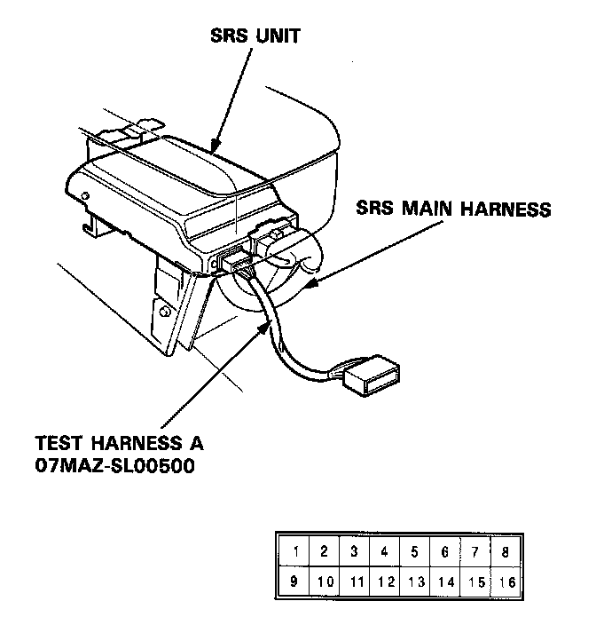
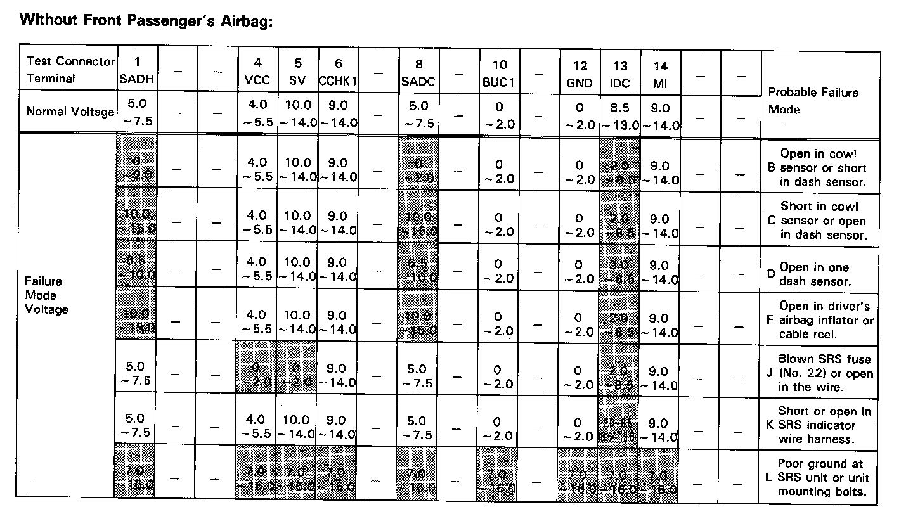
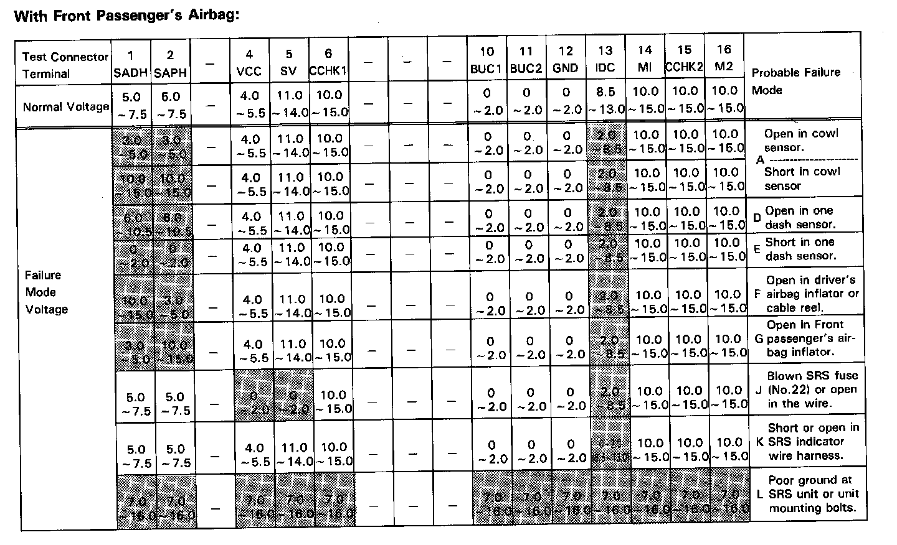
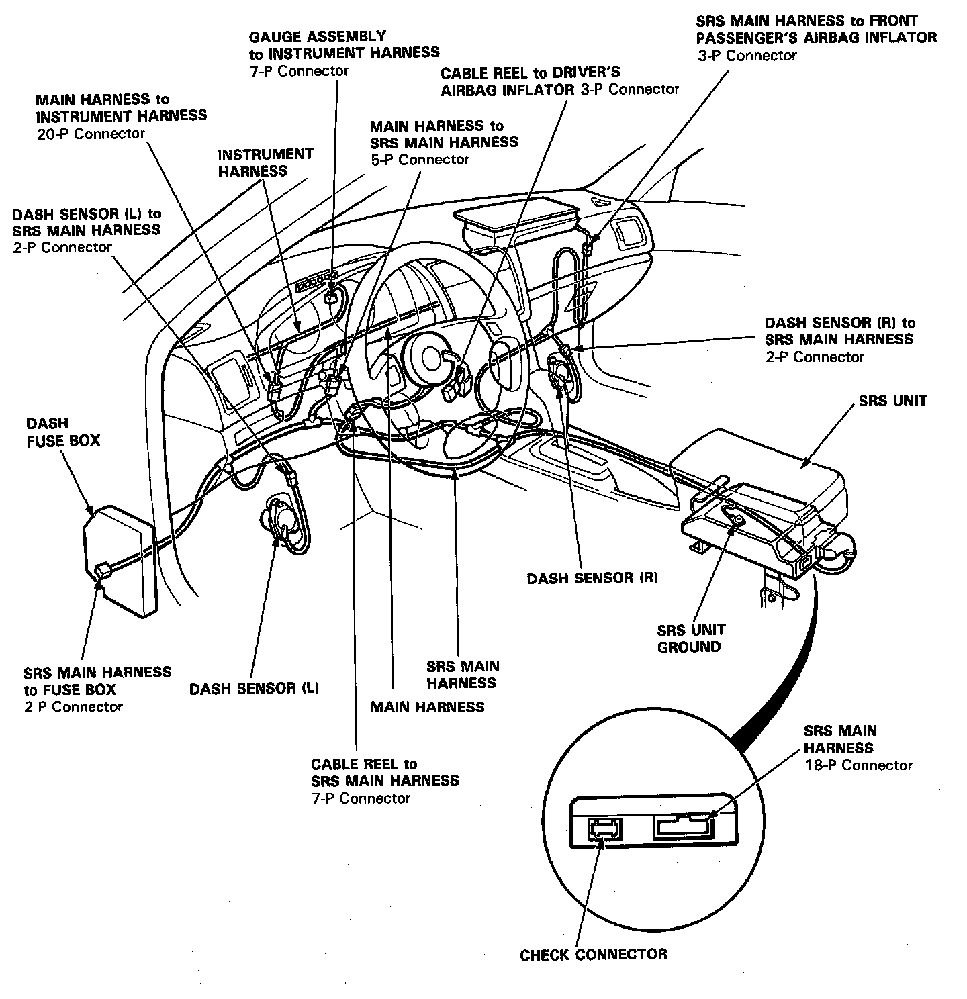

Indicator Stays on Continuously
SRS Indicator Light Stays On Continuously

Connect Test Harness A to the SRS unit and check voltages (to ground) according to the shaded areas in the chart below.

Without Front Passenger Air Bag

With Front Passenger Air Bag
- Turn the Ignition switch ON.
- Voltages in the chart assume an original "battery voltage" of approximately 12V.
- A significantly discharged battery (less than 12V) will result in different and possibly false readings.
- Do not disconnect the airbag(s) from the circuit when checking these voltages.
If your readings aren't within the ranges on the chart, check the contact condition of each SRS connector and its terminals.

Wiring Locations
If connector and contacts are OK, continue troubleshooting on the using that letter failure mode's diagnostic procedure.